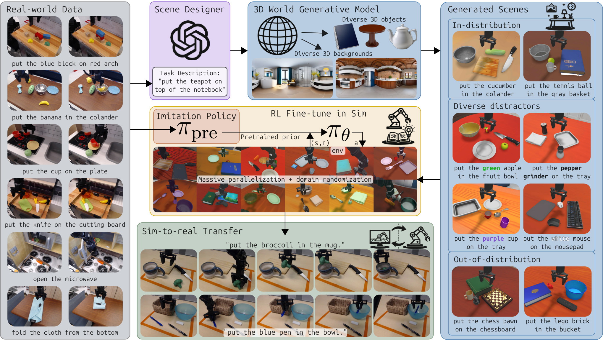
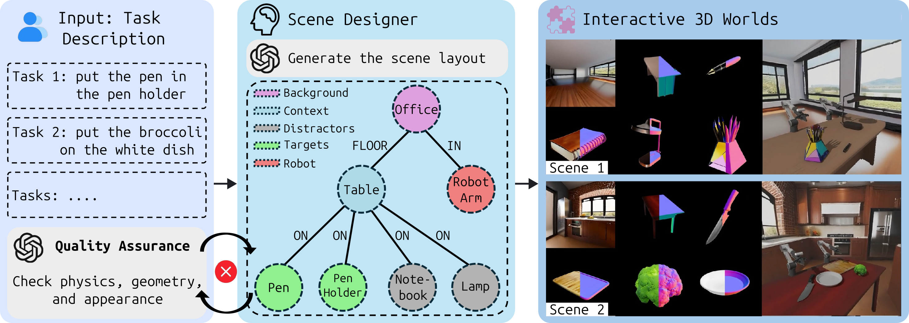
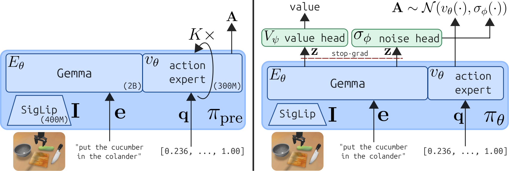
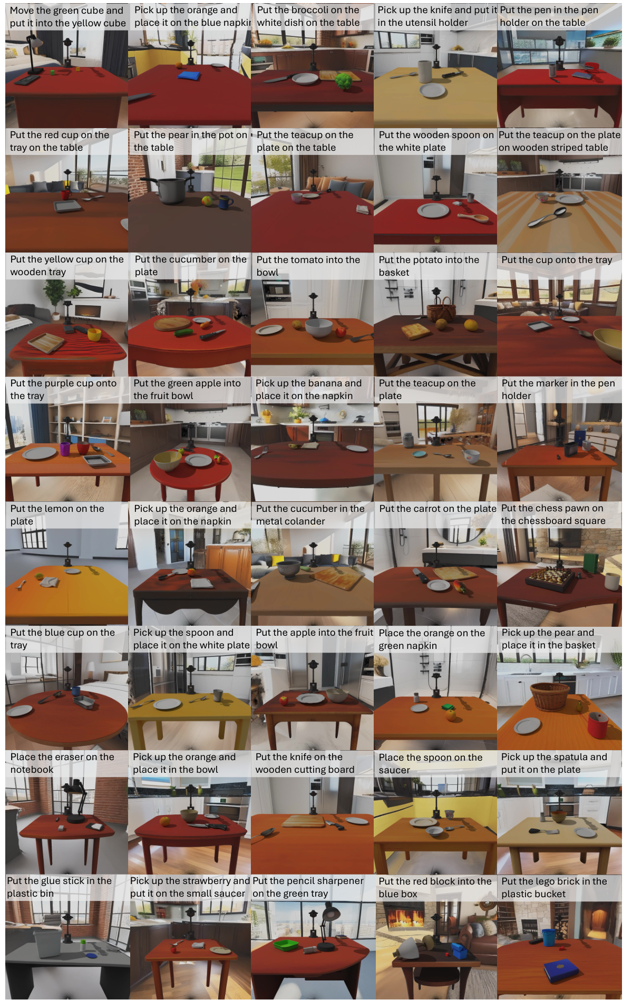
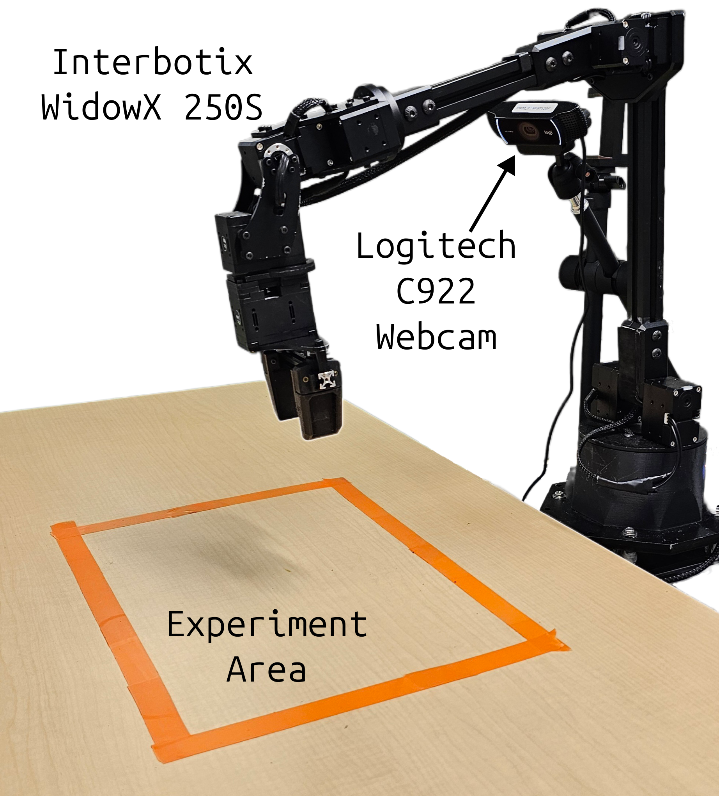
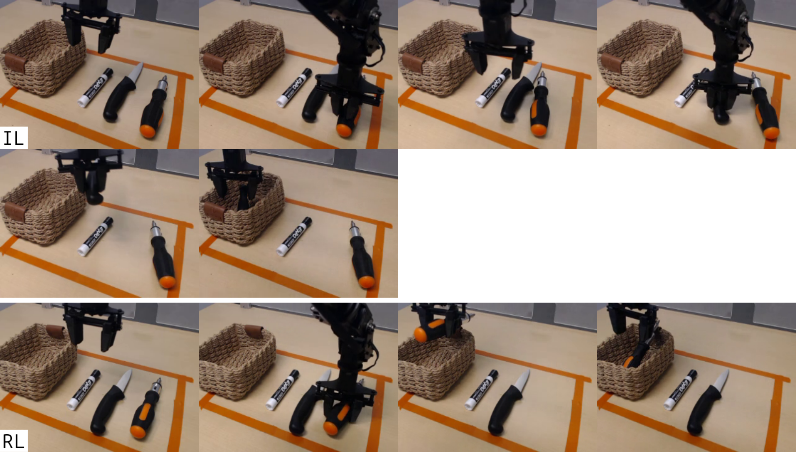
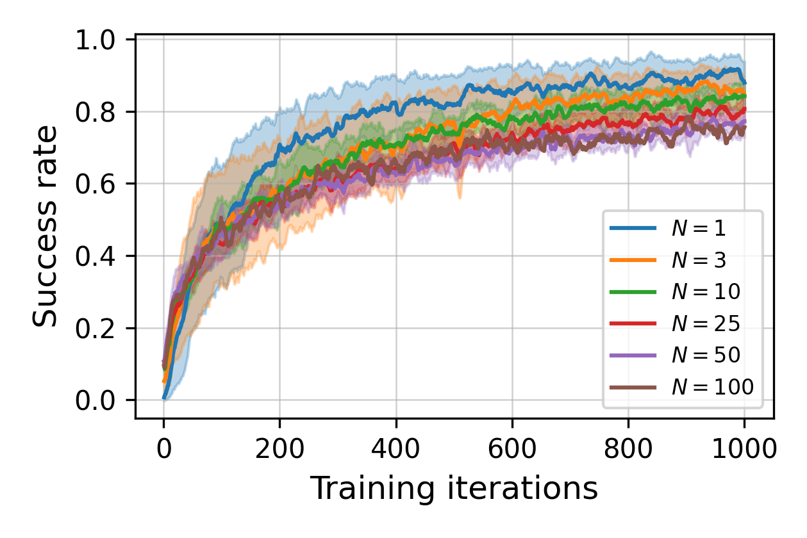
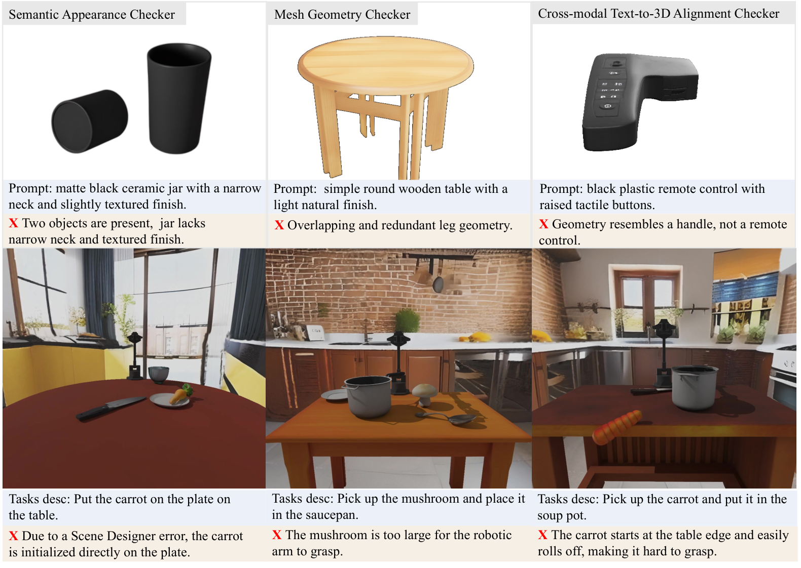
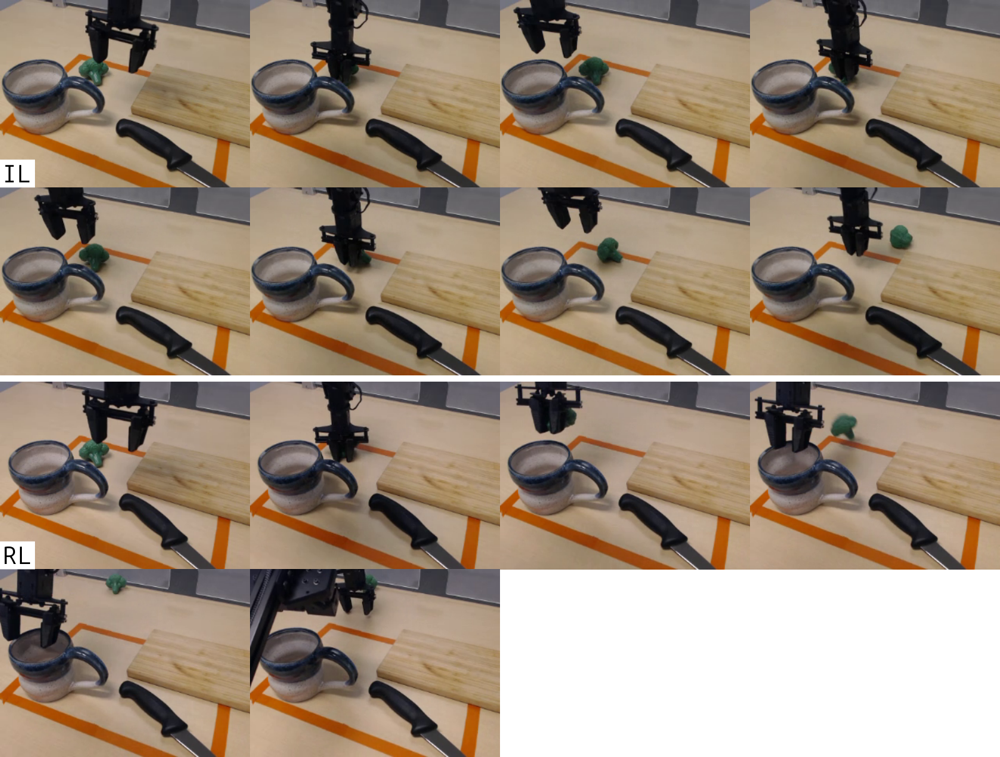

§030 秒速覽
四個關鍵數字,抓住全文骨架
§1問題:微調的弔詭——越練越窄
broadly pretrained → overfitted, scene-specific:論文開篇點名的悖論
VLA 訓練管線的第三階段(任務特定微調)是人力黑洞。模仿學習要人收資料;真實世界 RL 要人管獎勵、管重置、還常要 human-in-the-loop 陪練。更被忽視的問題是:在實體世界擴展場景多樣性貴到不可行,所以 RL-in-real 幾乎都在少數場景上微調——結果是把一個泛化的預訓練模型,練成只認自家桌子的特化策略。論文把既有路線的短板排開:
| 路線 | 代表做法 | 短板(論文說法) |
|---|---|---|
| 模仿學習微調 | task-specific SFT | OOD 狀態下表現滑落;資料碎片化引發 shortcut learning |
| 真實世界 RL | ConRFT、π*0.6 等 | 獎勵要靠訓練的 reward model / 人工標註;重置要手動或另學一個 policy;樣本效率靠 HIL 撐。90%+ 成功率多出自窄設定,場景多樣性無法擴展 |
| 模擬 RL(手工場景) | SimplerEnv 等 | oracle 成功偵測、自動重置都免費,但 3D 場景本身要人設計——本文實測:3 個手工場景練出的 policy 換到生成場景直接掉到 36.0%(§5) |
| real-to-sim 路線 | 場景重建、影片合成、世界模型 | 仍以真實資料為錨,多樣性上限受制於收了多少真實場景 |
| 3D 生成模型(前代) | TRELLIS、WorldGen | 只生靜態視覺資產,沒有物理互動性,不能直接當 RL 訓練場 |
缺口很明確:要一個文字進、可互動物理世界出的生成引擎,把「場景數」從人力成本變成算力成本。論文押注的是同門(Horizon Robotics)的 EmbodiedGen,並回答兩個問題:生成場景擬真度夠不夠撐起 sim-to-real?場景多樣性拉高後,zero-shot 泛化是不是真的跟著上去?
§2方法:文字 → 世界 → 平行 RL → 真機
EmbodiedGen 生成世界 × PPOFlow 微調 flow-matching VLA


學習問題的形狀
POMDP:觀測 = 單張 RGB 影像 + 語言指令 + 7 維末端執行器姿態(xyz、rpy、gripper);動作 = 長度 C=4 的 action chunk(每步 7 維:delta-pose + 夾爪開合),一個 chunk 當一個決策步。獎勵是純稀疏的規則式成功判定(式 A.1):物體 A 接觸目標 B、且不碰桌面、不碰機器人,才算成功——沒有任何 reward shaping。撐得起稀疏獎勵的前提,是 π0(3B,SigLIP+Gemma 骨幹 + action expert)先在 BridgeV2(70% 以上是 pick-and-place)上做過模仿預訓練。
PPOFlow:讓 flow-matching 策略能吃 PPO
Flow-matching 模型的動作生成是確定性的 ODE 積分,算不出 importance ratio,標準 PPO 直接卡死。ReinFlow 的解法是往每一步積分注入可學習的噪音頭 σφ,把每步積分變成一個高斯取樣——整條 denoising 鏈的聯合 log-prob 就能寫出來(式 5),再套 PPO clipped objective。本文的 PPOFlow 加了兩個工程關鍵:(1)importance ratio 上加冪次縮放係數 s=0.2,否則 log-prob 會飆到大量梯度被 clip 掉、訓練立即崩潰(App A);(2)積分步數直接設 K=1。

Sim-to-real 三件套
遷移靠三個樸素因子:(1)生成物體與場景的高擬真度;(2)簡單 domain randomization——物體位姿、環境光 RGB [0,0.6]³、方向光亮度 [0.5,1.5]、相機位置 ±5cm(重新對準原注視點)、機器人關節擾動 ±0.1 rad;(3)PD 控制 + 重力補償——只要模擬和真機控制器都能以夠低的追蹤誤差到達目標姿態,連顯式系統辨識都可省。控制延遲隨機化也不用做:action chunk(C=4)天然吸收了延遲。
§3實驗設定:一個任務族,兩個世界
100 個生成場景掃 N-scaling;12 個實體場景驗 sim-to-real

任務:語言指令下的抓取放置(把 A 放到 B 上),場景裡有數個干擾物。N-scaling 設計:從 100 個場景的全集 𝒲 隨機抽三個 50-scene 子集 ℋi,各自訓練 N∈{1,3,10,25,50}(3 個獨立 run 取均值±標準差),OOD 集是補集 𝒲∖ℋi;另外用全部 100 個場景單獨訓一個 run。基線:模仿策略 πpre(N=0),以及在 SimplerEnv 三個手工設計 Bridge 桌面場景上 RL 微調的對照組——用來隔離「生成場景多樣性」本身的貢獻。
| 項目 | 規格 |
|---|---|
| 模型 | π0(3B;取第三方 open-pi-zero 的 BridgeV2 預訓練檢查點)。也試過 OpenVLA(real-to-sim 落差大、7B 太重)與 SpatialVLA(延遲過高);官方 π0.5 在此設定反而比 π0 差(App D) |
| 模擬器 | ManiSkill 3(GPU 平行),192 個平行環境,episode 長度 25 步,控制頻率 5 Hz |
| 訓練 | 8× RTX 6000 Ada,5 天;VLM LoRA(rank 32)+ action expert 全參數;batch 19200、lr 2e-5(Table A.1) |
| 真機 | Interbotix WidowX 250S(夾爪最大開度僅 74mm,過大生成物體自動縮放)+ 單顆外接 Logitech C922 webcam;推論用一張 RTX 4090 |
| 評估 | 模擬:每場景 100 episodes。真機:12 場景 × 每策略 10 trials,共 240 次實驗;指標含 SR、部分成功 PSR(抓起並舉起)、動力學失敗率 DFR、語意失敗率 SFR、完成時間 TF |

§4主結果:多樣性買泛化,泛化撐真機
模擬 N-scaling + 真實世界 12 場景;綠字 = 該列較優
模擬:場景數 N 是主旋鈕
| 訓練配置 | EG 訓練場景(ID) | EG 未見場景(OOD) | SimplerEnv(OOD) | ID−OOD 差距 |
|---|---|---|---|---|
| πpre 模仿基線(N=0) | 9.7% | — | — | — |
| EG N=1 | 94.3% | 53.2% | 36.1% | 41.1 pp |
| EG N=50 | 80.5% | 77.9% | 68.4% | 2.6 pp |
| EG N=100(全集,單一 run) | 79.8% | — | 74.3% | — |
| SimplerEnv 手工 3 景(對照) | 36.0% | — | 96.7%(自家場景) | 60.7 pp |
N≤50 為 3 個獨立 run 均值;中間點的差距收斂:41.1pp(N=1)→ 27.4(N=3)→ 14.6(N=10)→ 2.6(N=50)。註:論文 Table 1 詳表在 arXiv HTML 版渲染失敗(nicematrix),本表數字取自內文文字;完整逐格數據見 PDF。
三條訊息:(1)N 越大,訓練場景成功率越低(94.3 → 80.5)——這部分是 batch 固定、每景樣本數 ∝1/N 的人為效應——但 OOD 成功率單調上升(53.2 → 77.9),ID−OOD 差距幾乎歸零,代表 policy 從「背場景」轉向「學任務」。(2)N=100 的 policy 在從沒見過的 SimplerEnv 拿到 74.3%,是所有配置最高。(3)反向對照最狠:手工 3 景練出來的 policy 在自家場景 96.7%,換到生成場景崩到 36.0%——RL-in-real 論文裡漂亮的 90%+,很可能就是這種窄分佈產物(論文原話:此類結果「typically obtained in narrowly defined settings」)。
真機:12 場景 × 240 trials
| 場景(指令 → 目標) | πpre SR | RL(N=100)SR | πpre TF | RL TF |
|---|---|---|---|---|
| 0 香蕉 → 碗 | 0.6 | 0.9 | 10.7s | 7.4s |
| 1 花椰菜 → 馬克杯 | 0.2 | 0.7 | 13.3s | 10.4s |
| 2 蘑菇 → 碗 | 0.1 | 0.9 | 11.5s | 8.4s |
| 3 湯匙 → 餐巾 | 0.1 | 0.7 | 6.1s | 12.2s |
| 4 (粉紅)橡皮擦 → 筆記本 | 0.3 | 1.0 | 11.0s | 10.2s |
| 5 (黃)刷子 → 碗 | 0.3 | 1.0 | 10.5s | 9.5s |
| 6 白橡皮擦 → 馬克杯 | 0.2 | 0.7 | 7.8s | 11.1s |
| 7 紅刀 → 砧板 | 0.2 | 0.8 | 14.6s | 12.2s |
| 8 藍筆 → (藍)碗 | 0.1 | 0.7 | 29.6s | 12.2s |
| 9 綠麥克筆 → 籃子 | 0.3 | 0.6 | 9.2s | 8.8s |
| 10 螺絲起子 → 籃子(訓練分佈外物體) | 0.0 | 0.5 | — | 10.4s |
| 11 藍茶杯 → 疊上黃茶杯(未見物件+任務組合) | 0.2 | 0.5 | 11.6s | 11.0s |
| 全部(240 trials) | SR 0.217 / PSR 0.45 | SR 0.75 / PSR 0.883 | 11.5s | 10.2s |
失敗剖面更有資訊量:模仿基線的失敗以動力學失誤為主(DFR 66.7%——抓空、掉落),RL 後降到 18.3%;語意失誤(拿錯物體)18.3% → 6.7%。也就是說 RL 微調同時修了「手笨」和「看錯」,但修「手笨」修得更多。兩個 OOD 場景值得單獨看:螺絲起子(訓練分佈裡完全沒有)從 0% → 50%;茶杯疊茶杯(物件與任務組合皆未見)20% → 50% 且 PSR 100%——泛化不只保住,還被 RL 放大。

§5消融與負結果:高訓練分數是警訊,不是成績
訓練曲線、手工場景對照、K 消融、生成管線翻車率

K 消融:多模態表達力不值錢(在 RL 微調裡)
| 積分步數 K | RL SR(%) | 反向傳播時間(s) | 推論延遲 reg / compile(s) |
|---|---|---|---|
| K=10(模仿原設定,未 RL) | — | — | 0.267 / 0.172 |
| K=4 | 77.29 | 108.80 | 0.153 / 0.107 |
| K=2 | 77.23 | 87.55 | 0.120 / 0.086 |
| K=1(單步高斯) | 79.75 | 74.74 | 0.098 / 0.073 |
論文自註:K 消融差距僅 2–2.5% 且各為單一 run——結論是「多模態沒幫助」,不是「K=1 顯著更強」。
訓練配方裡的地雷(App A)
- 凍結 VLM = 慢性死亡:只微調 action head 的配置,成功率先衝高、再飽和、最後掉到零(model collapse)。更新 VLM(LoRA 即可)是穩定學習的必要條件;凍結 SigLIP 視覺編碼器也會單調掉幾個百分點。
- importance ratio 不加冪次縮放(s=0.2)= 立即崩潰:log-prob 飆高導致多數梯度被 clip,訓練直接失效。
生成管線自己的翻車率
論文沒有把生成品質說成 solved:單次通過率外觀語意 83.3%、網格幾何僅 75.2%、文字-3D 一致性 91.9%;全自動 QA 後仍有 15% 場景需要人工修正(尺度錯誤、初始擺放不穩);全新生成一個場景要 46.8±5.0 分鐘(其中背景就佔 25 分鐘)。另外 WidowX 夾爪只有 74mm,過大物體得自動縮小才能抓——「生成的世界」實際上是向硬體妥協過的世界。


§6限制:論文自己說的,和沒說的
Limitations 一節只有一段——邊界要自己補
論文自列:實驗只做 pick-and-place——直接受限於 EmbodiedGen 目前能可靠生成的物體類型;未來要往鉸接物體、工具使用、多階段任務擴展。(論文也緩頰:BridgeV2 裡 70% 以上本來就是 pick-and-place。)
本站補充(作者未列):
- 獎勵是模擬器特權。稀疏成功判定(式 A.1)讀的是模擬器的 oracle 接觸狀態——這正是「為什麼在模擬做 RL」的核心紅利,但也意味著整套方法只覆蓋「成功可以用剛體接觸關係定義」的任務;成功條件是連續狀態變化(加熱、變形、混合)的任務,獎勵從何而來,論文沒有觸及。
- 真機評估統計功效有限。每場景每策略只有 10 trials,單場景 SR 的差距(如 0.5 vs 0.6)在這個 n 下噪音很大;N=100 的主力 policy 也是單一 run、單一具身(WidowX)、單一相機配置。方向性結論可信,逐格數字別過度解讀。
- 「多樣性」仍是同一族的多樣性。100 個場景全是 GPT-4o 模板化的桌面抓放,語言指令句式單一(「put the A on the B」);跨任務、跨句式、跨視角的泛化並未被這組實驗檢驗。
§7對煎蛋機器人感知任務的啟示
讀後解析——這部分是本站觀點,不是原文內容;對象:固定相機 RGBT、數十支影片體制的煮食感知堆疊
這是一篇「資料側」論文:演算法組件(π0、PPO、ReinFlow、ManiSkill3、EmbodiedGen)全是現成的,真正的論點是VLA 微調的瓶頸在場景分佈,而場景分佈可以用 3D 生成模型從人力成本變成算力成本。21.7%→75.0% 的頭條數字背後,最值錢的曲線其實是 N-scaling:場景數 1→50,OOD +24.7pp、ID−OOD 差距 41.1→2.6pp。對煎蛋感知堆疊,可以抄的是這套「多樣性紀律」和評估方法論;不可抄的是核心賣點本身——蛋的熟度是連續、細微、物理驅動的外觀變化,今天的 3D 生成引擎(論文自己承認只能生成剛體 pick-and-place 資產)做不出「一顆正在凝固的蛋」,更沒有 RGBT 熱通道。
- 生成世界買得到的:感知的「環境穩健性」。wok masking 這種幾何分割任務,失敗模式主要來自光照、背景、相機位移——正是論文 DR 清單覆蓋的軸(環境光 RGB [0,0.6]³、方向光亮度 [0.5,1.5]、相機位置 ±5cm 重新對準)。固定相機被碰歪幾公分後 mask 還準不準,可以直接抄相機 DR 當增強與驗收協定;數十支影片的小資料體制,合成光照/背景擾動是把「等效場景數 N」拉高最便宜的方式。
- 生成世界買不到的:熟度本身。蛋液攤開、蛋白由透明轉白、邊緣焦化、氣泡與油面反光——這是同一物體的連續狀態演變,不是資產庫裡的剛體;熱像通道更是無生成模型支援。sim gap 不在控制端(論文用 PD+重力補償就跨過去了),卡死在感知目標的資料生成端。熟度估計器的訓練資料,短期內仍得靠真實影片 + 時間軸標註,生成式世界幫不上忙。
- 獎勵依賴是方向性的:感知在 RL 上游。本文 RL 全靠模擬器 oracle 接觸判定發獎勵;煎蛋的「成功」= 熟度達標,物理世界沒有 oracle。若有朝一日要 RL 微調煮食操作策略,可靠的熟度偵測器是獎勵模型的前置依賴——先把感知堆疊做穩,才輪得到談 RL;不是反過來等 RL 取代感知。
- N=1 的崩法是同構警告。單場景 94.3%→OOD 53.2%、手工 3 景 96.7%→36.0%——換到煮食感知:只用自家那一口鍋、一盞燈訓練的 doneness 模型,在自家驗證集刷高分同樣證明不了什麼。驗收指標應該學這篇的做法:固定報一組「換鍋/換灶/換光」的 OOD 分數,把 ID−OOD 差距當一級公民指標,而不是只報整體準確率。
- DFR/SFR 失敗二分法直接可抄進 FSM gating。把 gate 的失敗拆成「語意失誤」(狀態判錯:平原期誤觸發、階段跳變漏偵測)與「動力學失誤」(時序偏移:判對但慢/快 N 個週期),分開計量、分開歸因——本文正是靠這個二分看出 RL 修「手笨」多於修「看錯」;煮食 FSM 同樣需要知道該修偵測器還是修去抖動邏輯。
- GPT-4o QA 迴圈是小資料管線的可抄件。三段式 VLM 檢查(語意/幾何/一致性)+ 不過就重抽,讓 516 個資產平均 1.37 次嘗試過關、85% 場景免人工。同樣模式可以用 VLM 自動審核合成增強幀(「這還像一顆正常的煎蛋嗎?光照可信嗎?」),把增強管線的人工抽檢變成自動守門——但記得本文的警示:全自動 QA 後仍有 15% 漏網,人工抽查不能歸零。